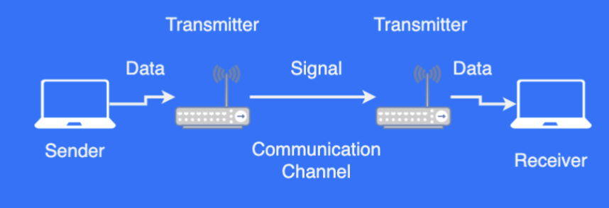
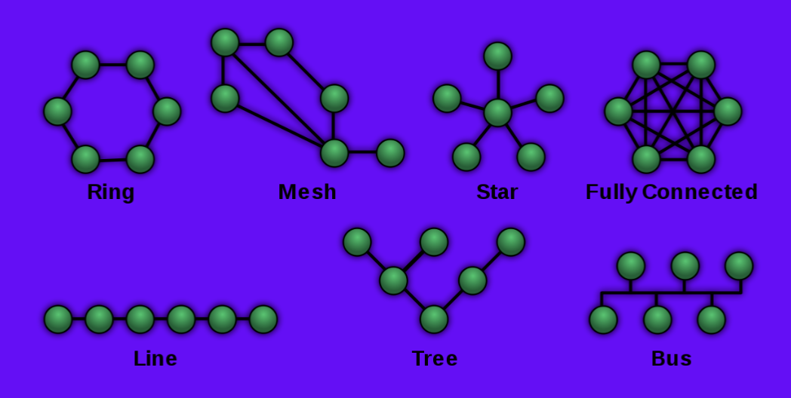
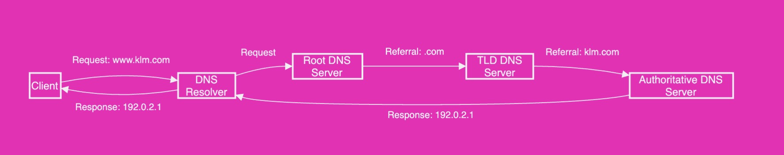
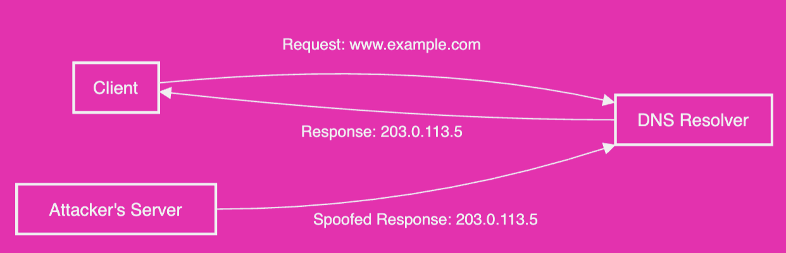

Lecture notes
- Lecture materials
- Lecture contents
- Introduction to Networks
- Introduction to the internet
- TCP/IP Protocol
- Application Layer Protocols
- Transport Layer Protocols
- Internet Protocols & IP Addresses
- Domain names and DNS
- Network Layer
- Internet Governance and infrastructure
- Hardware for Computer Networks
- Application and Services
Lecture materials
- High school networks notes (in Italian)
Lecture contents
- Introduction to Networks
- Understanding the Internet
- Application and Services
- Developing for the Web
Introduction to Networks
-
Communication networks → to exchange data and information
- Data → database of values
- Information → what is extracted from processed data
-
Shannon’s Communication Model → Devised by Claude Shannon in 1948

-
Classification of networks by extension
- PAN (Personal area network) → Serves a single individual wirelessly
- LAN (Local area network) → connects machines in a single building
- WAN (Wide area network) → large areas, are made up by smaller networks
-
Communication channels → medium for information transmission
- Wired channels → wires or cables
- Pros → Shileded, dependable and secure
- Cons → costly, limited mobility and easy to damage
- Wireless channels
- Used means → Radio signals, microwave
- Radio Frequency → Sent by transceivers through antennas
- Wireless devices and transceivers → send and receive data and include antennas
- Wired channels → wires or cables
-
Security in wired channels → Wired connections are secure
-
Bandwidth in communication channels
- Bandwidth → transmission capacity
- Broadband → at least 25 Mbps
- Narrowband → Slower than 25 Mbps
-
Topology of Networks → structure and layout of network components

- Point-to-point → connects peripheral devices to a host
- Star topology → Connects devices to a central device
- Mesh topology → All the devices are connected with each other
-
Network nodes
- Network node → any device on a network
- Data Terminal Equipment → stores or generates data
- Data Communication Equipment → controls data speed, signal conversion, error checking and routing
-
Devices as Network Nodes
Introduction to the internet
- Internet → global system of computers connected together
- Redundancy → The internet is redundant (Redundancy of paths)
- Hierarchical → internet is organized into levels/groups
- Birth of the internet → 1957 project at Stanford to connect computing machines at a distance as a part of the ARPA project. This later expanded to connect all universities in the US and include multiple services.
- Client-Server Architecture
- Checkout https://traceroute-online.com
tracerout [website]
- Checkout https://traceroute-online.com
Transclude of block
- Challenges of the internet
- How does the receiving computer interpret the response
- How to communicate across multiple operating systems
- how to ensure all information was transferred
- how to handle multiple requests and responses to the same router
- How do routers know where to send information
TCP/IP Protocol
- Defines rules for sending and receiving information between devices
- First developed by the US Department of Defense, now used widely
- Layers of the protocol:
- Network Layer → Captures the physical aspects of data transmission and hardware related protocols.
- Internet Layer → Looks after the logical transmission of data. Defines an IP Address for each device connected to the network.
- Transport Layer → Responsible for end-to-end communication and handles error-free transfers (TCP and UDP protocols). Some data has higher importance than other and is thus handled differently (e.g. bank info)
- Application Layer → Where the server defines networking preferences and safety (SSL)
Application Layer Protocols
- Hypertext Transfer Protocol → for web browsing, defines how web browsers and web servers communicate
- 200s → all good
- 400s → client errors
- 500s → server errors
- Languages: HTML, CSS, JavaScript
Transport Layer Protocols
- Responsible for end-to-end communication and data integrtiy
- Handles data segmentation, sequencing, error correction and flow control
- Transmission Control Protocol → ensures reliable communication, confirms data receipt and retransmits lost data
- User Datagram Protocol → Faster but less reliable, suitable for real-time application and video-streaming
Internet Protocols & IP Addresses
- Devices connected to the internet need to adhere to the IP protocol
Transclude of block
Domain names and DNS
- Domain name → easy to remember
- Top-level domains → .it, .com, .org, .nl
- Domain Name System → associates domain names with the corresponding IP Addresses

- DNS Spoofing → unauthorized changes to the hierarchy

Network Layer
- Handles the physical aspect of communication
- Specifies and defines cable types, signal standards and data rates
- Ethernet → wired connection with twisted-pair or coaxial cables
- Wi-Fi → standard for wireless connections, using radio frequency tech
Internet Governance and infrastructure
- Internet Corporation for Assigned Names and Numbers (ICANN) → Supervises internet
- ISP (Internet Service Providers) → Maintain the infrastructure
- Tier 1 ISP networks form the backbone of the internet (around 16 globally)
- Tier 2 Service Providers (e.g. Ziggo, Vodafone, KPN)
Hardware for Computer Networks
- Router → forwards packets and helps in allocation and deallocation of Private IP addresses
- Gateway → each router connects one network to another
- Wireless Access Point → Connected to a router, allow wireless devices to participate in the network
- Content Distribution Network (CDN) → Used in handling high traffic
- Redistribution → redirects requests and responses through routers to avoid traffic
- Caching → saves frequently requested resources
- Load balancing → stores resources across multiple servers to manage load
Exam information
All the content after this is irrelevant for the examination
Application and Services
- Client-Server Model →
- Server → Runs on a server to cater to requests from clients
- Web Servers
- EMail Servers
- Game Servers
- Realtime Comm. Servers
- Application Server
- Client → Limited process, makes requests to the servers
- Server → Runs on a server to cater to requests from clients
- Databases for Information Storage
Exam style questions
- What does error 404 mean?
- Why do we need standardisation to make the internet work?
- What does the application/transport/internet/network layer do?